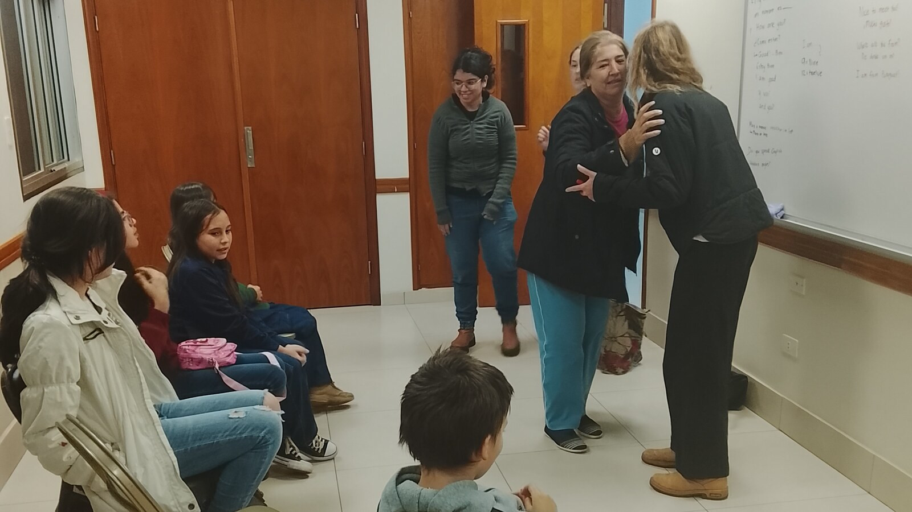

What Contribution Can Look Like Beyond a Traditional Job
A person can shape a community through presence, relationships, participation, and shared life—even when contribution does not resemble employment.

When we say an adult “contributes,” what picture comes to mind?
Usually it is a job: producing something, providing a service, earning money, or completing measurable tasks. Those contributions are real. But they are not the only way one human being matters to other people.
An adult with significant disabilities may contribute through a familiar greeting, a shared routine, helping with one step of a household task, creating art, participating in worship, showing up for a weekly group, or giving others the opportunity to know a life unlike their own.
We should not romanticize disability or call every movement inspirational. But communities are made from relationships and repeated presence as much as from economic production.
Belonging means a person’s presence matters before they prove what they can produce.
Contribution is larger than productivity
Paid work deserves access, accommodation, and fair compensation. Yet if contribution is defined only by employment, many children, older adults, caregivers, sick people, and disabled people become difficult to see.
Real communities depend on things that cannot be captured on a résumé: noticing when someone is absent, remembering a shared ritual, bringing humor into a room, receiving care with trust, and allowing relationships to deepen over time.
A disabled person does not need to perform a touching lesson for others. Their contribution may be mutual and ordinary. They can enjoy people, prefer some relationships, influence family decisions, change the pace of a gathering, and become someone whose presence is expected.
Presence becomes participation through continuity
Participation is not always speaking in a group, completing the same task as everyone else, or understanding every stated purpose of an event. It can begin with being there regularly enough to become known.
Sam comes with us to an English class at our church each week. Church is a big part of our family’s life and community. Sam does not speak English or Spanish, so his participation does not look like that of a typical language student.
Still, he comes. People see him. He experiences the familiar place and group. His presence is valuable and appreciated.
Over time, repetition can turn a public place into a familiar one. Other people learn how someone communicates, what helps them feel comfortable, and when they need space. The person learns voices, routes, rhythms, and expectations. That mutual familiarity is community infrastructure.
Belonging is not the same as being nearby
Community inclusion is not accomplished simply by placing a disabled person in a building with nondisabled people. A person can be physically present and still be ignored, tightly controlled, or treated as a visitor who never becomes known.
Meaningful inclusion asks whether the person has reliable ways to return, support to participate, relationships that continue, and a recognized place in the group. It also asks whether they can communicate discomfort and leave when needed.
The United Nations disability convention recognizes equal rights to community life and to participation in cultural life, recreation, leisure, and sport. These are not rewards for employment.
For people with high support needs, access often depends on invisible work: transportation, supplies, medication, communication, safety planning, and staying nearby without controlling every interaction.
Contribution can be practical, relational, or cultural
Some contributions have a visible outcome: helping prepare food, putting away supplies, watering a garden, carrying an item, or setting chairs before a gathering.
Others are relational: being a friend, sibling, cousin, neighbor, congregation member, or familiar participant. Still others are cultural: joining celebrations, maintaining family traditions, responding to music, sharing food, and helping a community become one where disabled people are expected rather than exceptional.
A person’s contribution can also be influence. Their preferences shape meals and outings. Their needs change how a building is designed. Their communication teaches others to listen beyond speech. Sam’s life belongs to Sam, but like every person’s life, it affects the people and places around him.
Do not turn belonging into another performance standard
There is a risk in broadening the word contribution: families may feel pressure to identify a special gift or useful task that proves the person’s worth. That simply replaces one test with another.
Some days a person participates actively. Some days they observe. Some days regulation, pain, anxiety, fatigue, or health needs require leaving early or staying home. No one should lose belonging because their contribution is difficult to describe.
Real participation includes refusal, privacy, breaks, changing interests, and the dignity of doing nothing in particular among people who still welcome you.
What you can do this week
Return to one welcoming place
Choose a community setting connected to the person’s actual interests or family life. A repeated visit may create more belonging than many one-time activities.
Support one recognizable role
Ask whether there is one authentic way to participate: carrying a familiar item, choosing music, greeting someone, helping with setup, or occupying the same preferred place.
Notice the relationship
Record who greeted the person, noticed their preferences, and would recognize their absence.
Long-term questions to consider
- Where is this person known by name and expected to return?
- Which relationships continue outside paid service hours?
- Does transportation make regular participation possible?
- Can partners recognize preference, refusal, distress, and enjoyment?
- Does the community adapt, or is the disabled person always expected to adapt?
- Can the person belong on days when they do not visibly contribute?
Casa de SAM’s position: belonging comes first
Casa de SAM is being imagined as part of a community, not as a world apart from one. Residents should have opportunities for paid work and meaningful work shaped around their abilities. They should also be neighbors, customers, friends, relatives, church members, guests, hosts, and familiar faces.
We believe contribution grows from belonging. Belonging does not have to be earned through contribution.
Sources and further reading
- United Nations: Convention on the Rights of Persons with Disabilities
- 42 CFR § 441.301: Home and Community-Based Services requirements
- Verdonschot et al.: Community participation of people with an intellectual disability
About Casa de SAM
Casa de SAM is a developing vision for a lifelong residential community in Paraguay for adults with autism and other developmental disabilities who need substantial daily support. The project is being designed around safety, flexible daily rhythms, meaningful choice, relationships, and belonging that does not have to be earned through productivity or independence.
Casa de SAM is not yet an operating nonprofit or residential provider. We are currently researching, documenting the vision, and looking for people who may eventually help build it responsibly.
This article provides general educational information and describes Casa de SAM’s developing philosophy. It is not individualized medical, therapeutic, vocational, legal, religious, or program-placement advice.